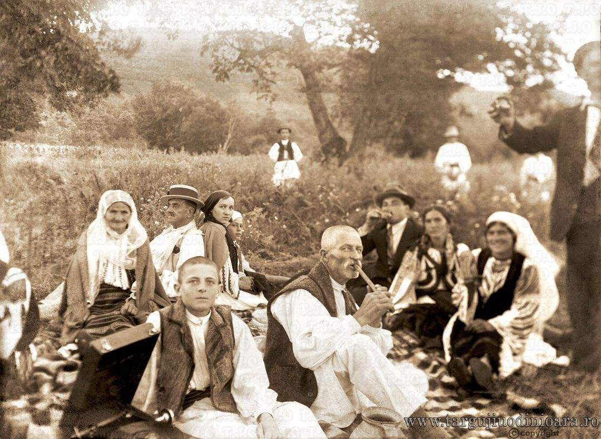

Gorjeni din Stănesti la picnic
Perioada interbelică, 1937-1940. Natură cu multă verdeață, flori, aer curat, mâncare, băutură, muzică și voie bună… Jos, în partea stângă, aproape ieșit din cadru, vedem un patefon, o tehnologie pe care nu și-o putea permite oricine.

Intersectia străzii Grivitei
Târgu Jiu, intersecția străzii Griviței cu strada Tudor Vladimirescu la sfârșitul anilor `70. Pe locul clădirii din imagine și a tronsonului de case ce se continuă către vest, astăzi se află părculețul din fața Tribunalului.
Târgu Jiu odinioară
Poți să vezi și alte poze din trecut și să interacționezi cu restul comunității pe pagina de facebook. Poți lăsa și un like!